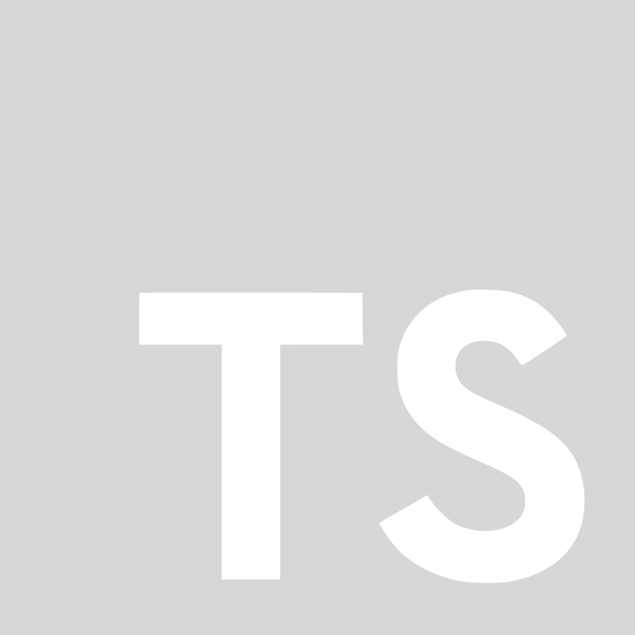
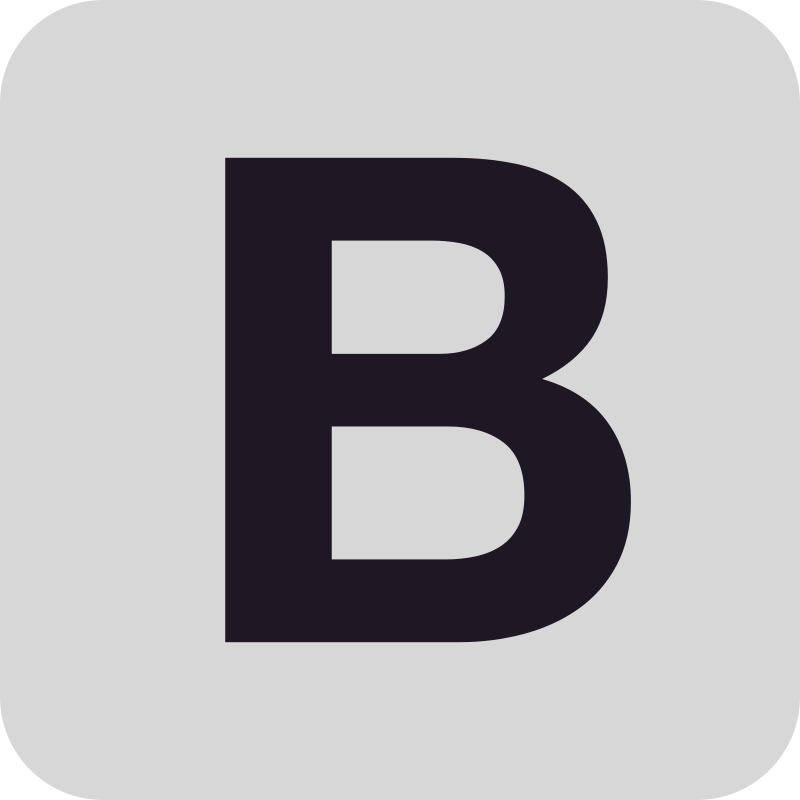

JavaScript: Linguagem para interatividade.

TypeScript: Tipagem estática para JavaScript.
Angular: Framework para SPAs.
React: Framework para interfaces dinâmicas.
CSS (SASS, SCSS): Estilização eficiente de páginas.

Bootstrap: Framework para sites responsivos.